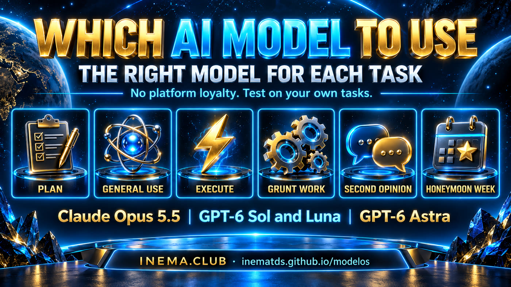

Many models shipped at the same time. The practical answer is simple: use the best model for each task, with no loyalty to any platform.

Click a model for the full, plain-language explanation.
The best for everyday work: fast, direct, token-efficient and excellent on complex projects.
🔷 GPT-6 AstraPlanning and hard problemsThe model for thinking before doing: planning, deciding architecture and tackling what is truly hard.
☀️ GPT-6 SolCost-effective executionGood and token-efficient, but below Astra on demanding work. It shines when the task is already well defined.
🌙 GPT-6 LunaGrunt workThe executor for repetitive, clear and unambiguous tasks. It has two gears: light and heavy.
💎 Claude Fable 5.1Lost its placeVery capable, but token-hungry — and Opus 5.5 now delivers the same or more for much less.
✖️ Grok 4.7A step backPoor experience in hands-on use and worse than the previous version (4.6).
➖ Claude Sonnet 5 · Haiku 4.5Skip in the Claude stackSonnet 5 costs too much per task; the current Haiku is weak. Inside Claude, use Opus 5.5 at low effort.
Test the models on your own tasks.
Beware of the honeymoon effect: new models look amazing in their first days. Wait a week and watch stability, quality and cost before changing your whole stack.
Used through subscriptions (Claude plan + Codex plan). “Cost” here means how much of the quota each model uses up.
GPT-6 Astra · medium–high effort. Architecture, scenario planning, demanding cases.
Claude Opus 5.5 · low effort. Fast, direct, economical, needs few instructions.
Claude Opus 5.5 · low–medium. Gets it right the first time where taste matters.
GPT-6 Sol · medium–high. Good value when the task is already well defined.
GPT-6 Sol · medium–high. Strong when there is a clear criterion (tests that pass or fail).
GPT-6 Luna · Low for simple and fast; High / X-High for heavy work. Unambiguous tasks only.
Opus 5.5 orchestrates, Sol or Luna execute. Judgment once, cheap execution many times.
Astra proposes, Opus 5.5 reviews. Two cheap views beat one expensive one.
Grok 4.7 (worse than 4.6) · Fable 5.1 (expensive, surpassed by Opus 5.5) · Sonnet 5 and Haiku 4.5 (weak value).
Look at the hardest step of the task, not the task as a whole.
Go wherever you are best served — team Claude or team Codex, it doesn't matter.
Above “high” effort there was no real gain. Raise it only with evidence.
Every new model looks great in its first days. Wait a week before changing your stack.
A model that uses more quota but nails it the first time can beat four attempts on the cheaper one.
Two agents in the same repository trip over each other. Isolate each one and tell it where it may write.
Three real tasks, two models, same prompt. Thirty minutes beat any benchmark.
Nothing to install beyond the tools you already use.
Claude Code or Claude Desktop, for Opus 5.5.
# check quota usage /usage
Codex CLI or Codex Desktop, for GPT-6 Astra, Sol and Luna.
codex # opens a session
Model cards, rules and prompts in Markdown (written in Portuguese).
git clone https://github.com/inematds/modelos
From a quick lookup to turning the catalog into a skill.
The README table is the quick reference. When in doubt, open the model's card.
cat README.md # stack per task + rules cat modelos/opus-5-5.md # card: best for, avoid for, effort
For flows with more than one model, copy the matching prompt.
prompts/planejar-executar.md # Astra plans → Sol executes prompts/segunda-opiniao.md # Astra proposes → Opus 5.5 reviews prompts/orquestrador-workers.md # Opus 5.5 splits work → Sol/Luna do it prompts/tarefa-bracal.md # Luna in batch, no ambiguity
One line per observation, newest on top. This is what makes the honeymoon rule practical.
# log.md
| date | model | task | result | source |Three real tasks (easy, medium, hard), same prompt on the current model and the candidate. Repeat the hard one after a week.
regras.md # 30-minute protocol avaliacao/bateria.md # 8 real cases, 0–3 score, quota used
There is a ready draft that answers “which model should I use for this?”.
cp -r skills/escolher-modelo ~/.claude/skills/The expensive part (judgment) happens once; the long part (execution) runs cheap.
Astra writes a plan with verifiable steps; Sol executes without changing it and stops if anything goes off-script.
Astra proposes; Opus 5.5 reviews as a skeptic. If they agree, go ahead. If not, the disagreement is what you decide.
Opus 5.5 splits the work and reviews it; Sol or Luna handle each part in its own folder.
The stack is a starting point and will be revisited with real use.